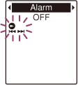
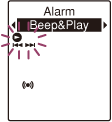

IC RecorderICD-PX333/PX333F
Playing back a file at a desired time with an alarm
You can sound an alarm and start playback of a selected file at a desired time. You can have a file played back on a specified date, once every week, or at the same time every day. You can set an alarm for a file.
- Select the file you want to play back with an alarm.
- Enter the alarm setting mode.
- In the stop mode, select DISP/MENU - “Alarm,” and then press
 PLAY/STOP・ENTER.
PLAY/STOP・ENTER.

- Press –
 or
or  + to select “ON,” and then press PLAY/STOP・ENTER.
+ to select “ON,” and then press PLAY/STOP・ENTER.
- In the stop mode, select DISP/MENU - “Alarm,” and then press
- Set the alarm date and time.
- Press – or + to select “Date,” a day of the week, or “Daily,” and then press PLAY/STOP・ENTER.
- Do one of the following operations.
When you select “Date,” set the year, month, day, hour, and minute in sequence, as described in “Setting the clock.”
When you select a day of the week or “Daily,” press –
or + to set the hour, and then press PLAY/STOP・ENTER. Press – or + to set the minute, and then press PLAY/STOP・ENTER.
- Press –
- Press – or + to select a favorite alarm pattern, and then press PLAY/STOP・ENTER.

“Executing...,” is displayed.
- Press
 (stop) to exit the menu mode.
The setting process is finished and “” (alarm indicator) appears in the display window.
(stop) to exit the menu mode.
The setting process is finished and “” (alarm indicator) appears in the display window.
When the set date and time comes, the IC recorder is automatically turned on and “ALARM” is displayed in the display window. Then the alarm and the selected file will be played back using the selected alarm pattern. When the playback ends, the IC recorder will stop automatically. (When the alarm pattern is set to “Beep&Play” or “Play,” the IC recorder will stop at the beginning of the selected file.)
Descriptions of the alarm pattern
You can select one of the menu items available.
Beep&Play:
The selected file is played back after the alarm sounds.
Beep:
Only the alarm sounds.
Play:
Only the selected file is played back.
Note
- An alarm set will not sound during recording. The alarm will start playing after you stop the recording.
- You can set only one alarm each one file.
- When the clock has not been set or no files are recorded, you cannot set the alarm.
- The alarm sounds even if you set “Beep” to “OFF” in the menu.
- If the alarm time comes while the IC recorder is accessing data, etc., the alarm may be canceled automatically.
- If more than one alarm time comes, only the first file will be played back with an alarm.
- If you divide a file you have set an alarm for, the alarm setting remains on only the first part of the divided file.
- If you erase a file in which you have set an alarm, that alarm will be also canceled.
- You cannot set alarm in podcast files.
- You cannot set an alarm in the files stored on a memory card.
Hint
- To change the alarm setting, select the file you want to change its alarm setting, and then follow steps 2 through 5.
- To cancel the alarm setting, follow steps 1 and 2. In step 2, select “OFF” (instead of “ON”) and press PLAY/STOP・ENTER. The alarm will be canceled and the alarm indicator will disappear from the display window.
- To stop the alarm playback, press any button other than VOL –/+ while the alarm sound is heard. If the HOLD function is activated, you can stop the alarm playback by pressing any button.